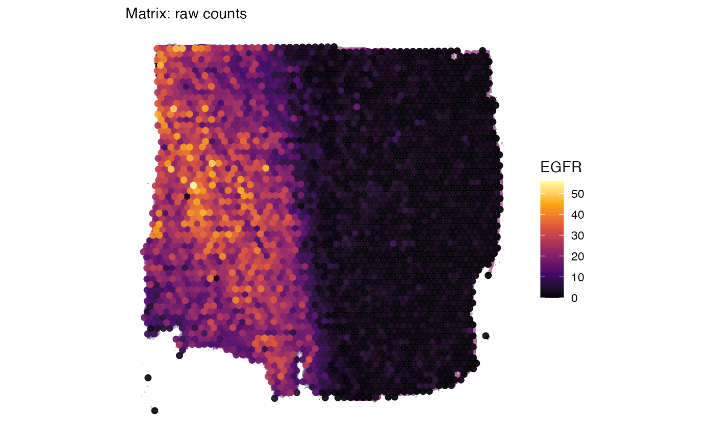
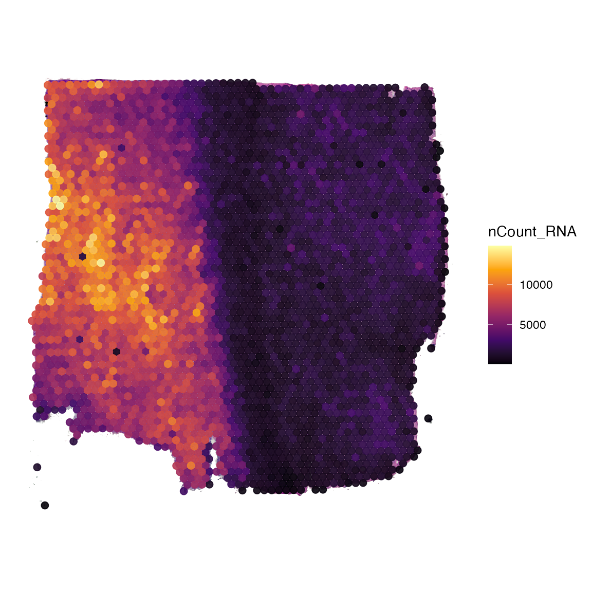
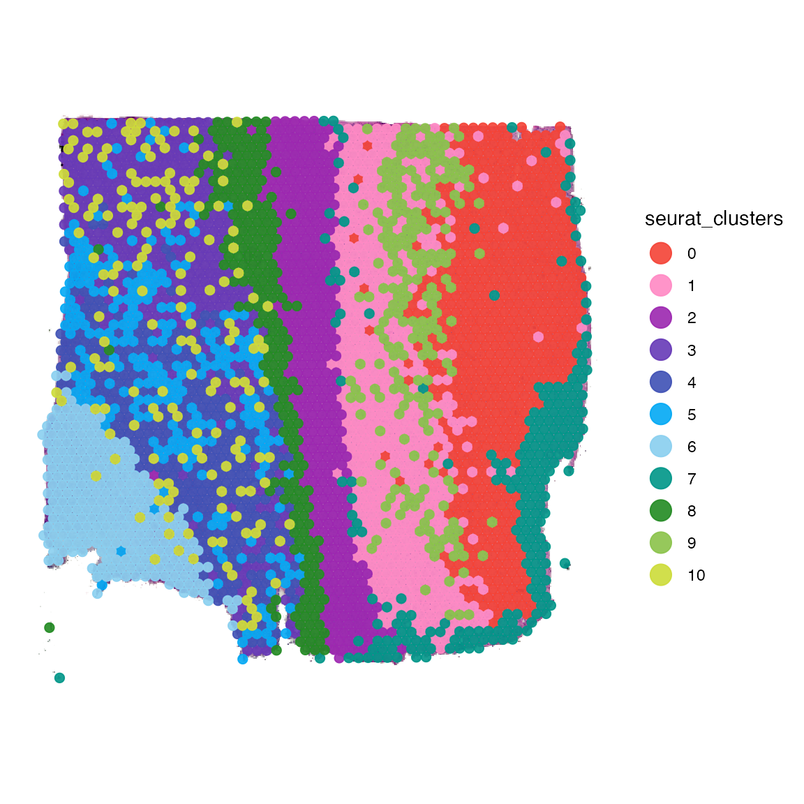
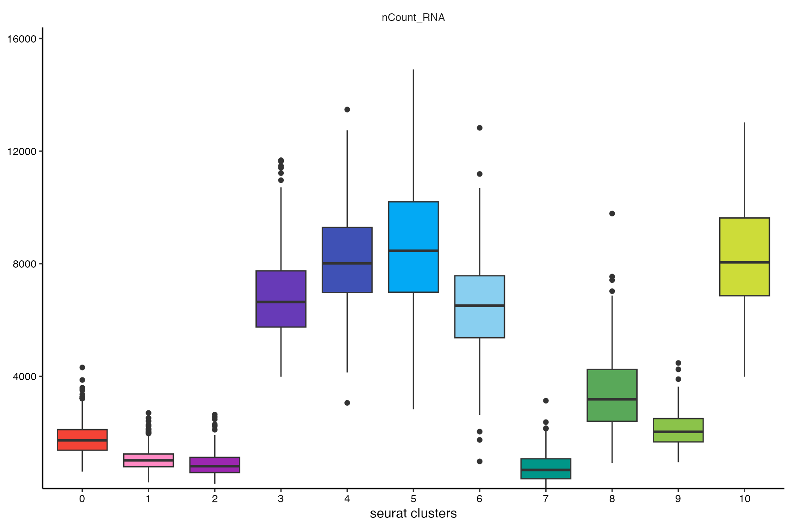

Adding Data to SPATA2 objects
adding-data.Rmd1. Introduction
While SPATA2 provides wrappers for multiple algorithms, you can always add data from external sources and packages. Depending on the kind of data you want to add, different functions are required.
library(SPATA2)
library(tidyverse)
# load SPATA2 inbuilt example data
object_t269 <- loadExampleObject("UKF269T")2. Data matrices
Assuming you have a data matrix processed with functions from a
different package (e.g. Seurat), you can add them to the SPATA2 object
via the function addProcessedMatrix().
library(Seurat)
# create Seurat object from count matrix
count_mtr <- getCountMatrix(object_t269)
seurat_obj <- CreateSeuratObject(count_mtr)
seurat_obj <- NormalizeData(seurat_obj)
seurat_obj <- ScaleData(seurat_obj)
scaled_mtr <- GetAssayData(seurat_obj, layer = "scale.data")
# show a small subset of the scaled mtr
scaled_mtr[1:5, 1:5]## AAACAAGTATCTCCCA-1 AAACACCAATAACTGC-1 AAACAGAGCGACTCCT-1
## AL669831.5 -0.13779796 -0.13779796 -0.13779796
## FAM87B -0.03675644 -0.03675644 -0.03675644
## FAM41C -0.11923196 -0.11923196 -0.11923196
## AL645608.1 -0.02790417 -0.02790417 -0.02790417
## KLHL17 -0.20169999 4.33113446 -0.20169999
## AAACATTTCCCGGATT-1 AAACCCGAACGAAATC-1
## AL669831.5 -0.13779796 -0.13779796
## FAM87B -0.03675644 -0.03675644
## FAM41C -0.11923196 -0.11923196
## AL645608.1 -0.02790417 -0.02790417
## KLHL17 -0.20169999 -0.20169999
# add the processed matrix to SPATA2 object under the name 'scaled'
object_t269 <-
addProcessedMatrix(
object = object_t269,
proc_mtr = scaled_mtr,
mtr_name = "scaled"
)
# the matrix is now accessible next to all other matrices
# ('counts' refers to the raw count matrix with which the SPATA2 object has been initated)
getMatrixNames(object_t269)## [1] "counts" "scaled"
# check which matrix is currently active
activeMatrix(object_t269)## [1] "counts"
# create a surface plot with EGFR expression using raw counts
egfr_counts <-
plotSurface(object_t269, color_by = "EGFR") +
labs(subtitle = "Matrix: raw counts")
# activate the processes matrix to make functions pick it by default
object_t269 <- activateMatrix(object_t269, mtr_name = "scaled")
activeMatrix(object_t269)## [1] "scaled"
# create a surface plot with EGFR expression using scaled expression
egfr_scaled <-
plotSurface(object_t269, color_by = "EGFR") +
labs(subtitle = "Matrix: scaled by seurat")
# show plots
egfr_counts
egfr_scaled
3. Meta features
Features that are not raw or processed molecular counts, like
clustering or certain scores, are stored in the meta data.frame of the
SPATA2 object, as obtained by getMetaDf().
SPATA2 intern functions like runBayesSpaceClustering() or
runCNV() add the results automatically to this data.frame.
The following code chunk creates a data.frame of meta SPATA2 extern
created meta features that can be added to the SPATA2
object.
seurat_obj <- FindVariableFeatures(seurat_obj)
seurat_obj <- RunPCA(seurat_obj)
seurat_obj <- FindNeighbors(seurat_obj)
seurat_obj <- FindClusters(seurat_obj)## Modularity Optimizer version 1.3.0 by Ludo Waltman and Nees Jan van Eck
##
## Number of nodes: 3217
## Number of edges: 108933
##
## Running Louvain algorithm...
## Maximum modularity in 10 random starts: 0.8293
## Number of communities: 11
## Elapsed time: 0 seconds
# add rownames as 'barcodes' variable
seurat_meta_df <-
tibble::rownames_to_column(seurat_obj@meta.data, var = "barcodes") %>%
tibble::as_tibble()
# show meta df
seurat_meta_df## # A tibble: 3,217 × 6
## barcodes orig.ident nCount_RNA nFeature_RNA RNA_snn_res.0.8 seurat_clusters
## <chr> <fct> <dbl> <int> <fct> <fct>
## 1 AAACAAGTA… SeuratPro… 1614 842 0 0
## 2 AAACACCAA… SeuratPro… 10498 3211 10 10
## 3 AAACAGAGC… SeuratPro… 1258 739 1 1
## 4 AAACATTTC… SeuratPro… 2387 1226 0 0
## 5 AAACCCGAA… SeuratPro… 3070 1373 0 0
## 6 AAACCGGGT… SeuratPro… 14562 3579 5 5
## 7 AAACCGTTC… SeuratPro… 8014 2610 3 3
## 8 AAACCTAAG… SeuratPro… 4476 1945 9 9
## 9 AAACCTCAT… SeuratPro… 9823 2818 5 5
## 10 AAACGAGAC… SeuratPro… 584 415 1 1
## # ℹ 3,207 more rowsThe meta data.frame from the Seurat object contains
cluster results as well as summarizing numeric variables like
nCount_RNA and nFeature_RNA. These variables can be
added to the SPATA2 object and are afterwards accessible
with all SPATA2 functions.
# add features from the data.frame
object_t269 <-
addFeatures(
object = object_t269,
feature_df = seurat_meta_df,
feature_names = c("nCount_RNA", "seurat_clusters"),
overwrite = TRUE
)
# once added, they are accessible for all SPATA2 functions
plotSurface(object_t269, color_by = "nCount_RNA")
plotSurface(object_t269, color_by = "seurat_clusters", pt_clrp = "sifre") 
Grouping variables such as the seurat_clusters variable can be used for comparative analysis.
plotBoxplot(object_t269, variables = "nCount_RNA", across = "seurat_clusters", clrp = "sifre") +
legendNone() +
labs(x = "seurat clusters")
4. Images
To learn how to register additional images in the SPATA2
object please refer to the vignette about image handling in SPATA2.